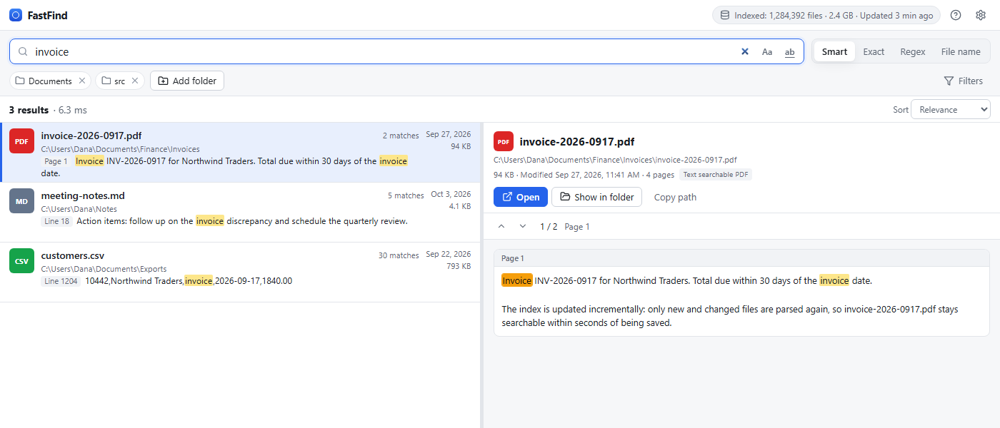

Inside every document
Word, Excel, PowerPoint (old and new formats), PDF, OpenDocument, EPUB, RTF, HTML, Markdown, CSV, logs and 150+ kinds of source code.
FastFind reads the text inside your documents, PDFs, spreadsheets, presentations and code once, then answers every search in milliseconds. It runs entirely on your computer.

Word, Excel, PowerPoint (old and new formats), PDF, OpenDocument, EPUB, RTF, HTML, Markdown, CSV, logs and 150+ kinds of source code.
Most searches finish in under 10 ms, even with a million files indexed. Indexing reaches thousands of files per second.
Highlighted snippets tell you the page, slide, sheet and cell, or line. The preview steps through every match.
Phrases, AND / OR / NOT, wildcards and filters by type, folder, date and size. Exact and regular-expression modes too.
New, edited, renamed and deleted files are picked up as they change. Restarting re-reads only what changed.
Your files and their contents never leave your computer. No account, no cloud, no telemetry.
With the free Tesseract OCR installed, FastFind can read scanned PDFs and images, in the languages you choose.
Damaged, locked or huge files don't stop indexing. They're listed with the reason, so you know what was skipped.
Type a few words and results appear as you type. When you need more precision, add a filter or switch mode. Press F1 in the app for the full list.
Try it in the live demo →"annual report" | exact phrase |
invoice -draft | one word, without another |
(invoice OR receipt) 2026 | alternatives, grouped |
budget ext:xlsx | only spreadsheets of that type |
type:presentation modified:7d | slides changed this week |
in:"D:\Projects" size:>10mb | large files in one folder |
The latest version is free and open source under the MIT license.
Windows 10 or 11, 64-bit
Installer (.exe) MSI packagemacOS 11 or later, Apple silicon and Intel
Disk image (.dmg)64-bit, most distributions
AppImage Debian / Ubuntu (.deb)First launch: the installers aren't code-signed by Microsoft or Apple yet, so your system warns once. On Windows choose More info → Run anyway. On macOS open System Settings → Privacy & Security and click Open Anyway.
Updates: FastFind can check for new versions once a day, but only if you allow it. Every update is verified with FastFind's signing key before it installs.
Scanned documents need Tesseract OCR, which is free. Everything else is included.
FastFind never uploads your files, their contents or what you search for. There is no account, no analytics and no crash reporting. The index lives in FastFind's folder on your computer. The only network request it can make is the optional update check, which you're asked about first. The source code is public, so you can check.